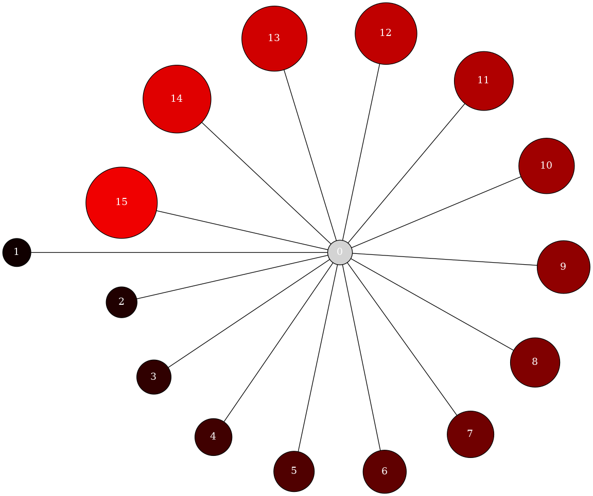

Note
Go to the end to download the full example code
Star#
Create and draw a star with varying node properties.
strict graph "" {
node [fixedsize=true,
fontcolor="#FFFFFF",
shape=circle,
style=filled
];
1 [fillcolor="#100000",
height=0.5625,
width=0.5625];
0 -- 1;
2 [fillcolor="#200000",
height=0.625,
width=0.625];
0 -- 2;
3 [fillcolor="#300000",
height=0.6875,
width=0.6875];
0 -- 3;
4 [fillcolor="#400000",
height=0.75,
width=0.75];
0 -- 4;
5 [fillcolor="#500000",
height=0.8125,
width=0.8125];
0 -- 5;
6 [fillcolor="#600000",
height=0.875,
width=0.875];
0 -- 6;
7 [fillcolor="#700000",
height=0.9375,
width=0.9375];
0 -- 7;
8 [fillcolor="#800000",
height=1.0,
width=1.0];
0 -- 8;
9 [fillcolor="#900000",
height=1.0625,
width=1.0625];
0 -- 9;
10 [fillcolor="#a00000",
height=1.125,
width=1.125];
0 -- 10;
11 [fillcolor="#b00000",
height=1.1875,
width=1.1875];
0 -- 11;
12 [fillcolor="#c00000",
height=1.25,
width=1.25];
0 -- 12;
13 [fillcolor="#d00000",
height=1.3125,
width=1.3125];
0 -- 13;
14 [fillcolor="#e00000",
height=1.375,
width=1.375];
0 -- 14;
15 [fillcolor="#f00000",
height=1.4375,
width=1.4375];
0 -- 15;
}
# Copyright (C) 2006 by
# Aric Hagberg <hagberg@lanl.gov>
# Dan Schult <dschult@colgate.edu>
# Manos Renieris, http://www.cs.brown.edu/~er/
# Distributed with BSD license.
# All rights reserved, see LICENSE for details.
__author__ = """Aric Hagberg (hagberg@lanl.gov)"""
from pygraphviz import *
A = AGraph()
# set some default node attributes
A.node_attr["style"] = "filled"
A.node_attr["shape"] = "circle"
A.node_attr["fixedsize"] = "true"
A.node_attr["fontcolor"] = "#FFFFFF"
# make a star in shades of red
for i in range(1, 16):
A.add_edge(0, i)
n = A.get_node(i)
n.attr["fillcolor"] = f"#{i * 16:2x}0000"
n.attr["height"] = f"{i / 16.0 + 0.5}"
n.attr["width"] = f"{i / 16.0 + 0.5}"
print(A.string()) # print to screen
A.write("star.dot") # write to simple.dot
A.draw("star.png", prog="circo") # draw to png using circo layout
Total running time of the script: (0 minutes 0.088 seconds)